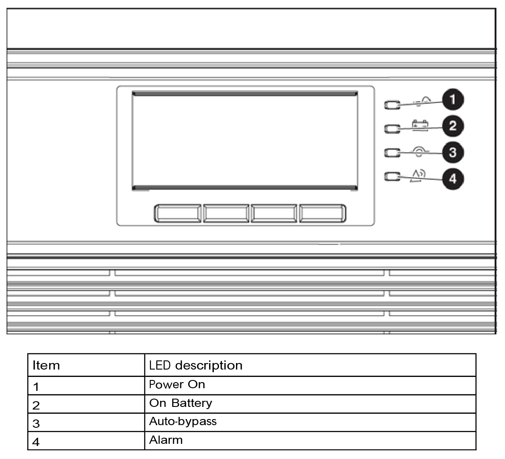
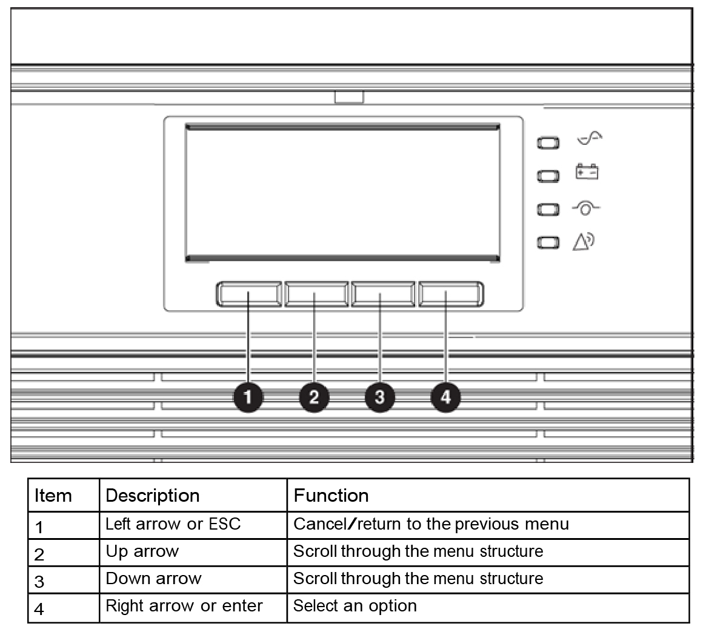
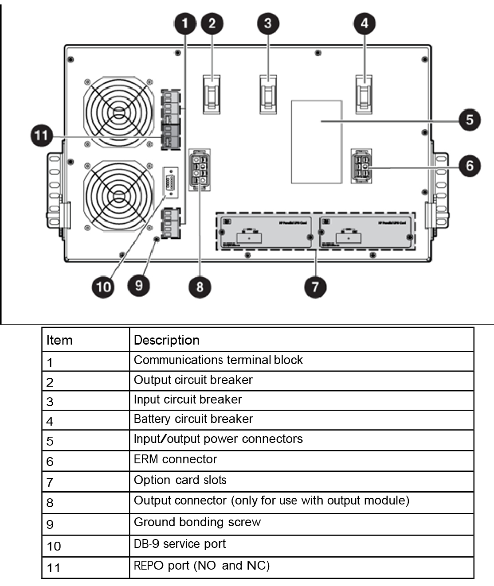

This troubleshooting procedure applies to failure at the UPS System in the Ground Shelter. The UPS System has both LED and audible signals that can help in troubleshooting a malfunction.
- 1
- Technical support team
- Electric
- 10
- Standard toolbox tower
-
CAUTION 
Figure 1. UPS LED
Status

Figure 2. UPS
Function buttons

Figure 3. UPS rear
description

-
- If the UPS in on bypass mode then battery mode is not available and the equipment is not protected; however, the utility power continues to be passively filtered by the UPS. In this case check for one of the following alarms:
- Overtemperature
- Overload
- UPS failure
- Hot swap
- REPO
- If bypass is unavailable, the UPS is receiving utility power that might be unstable or in brownout conditions. In this situation verify the bypass utility and then check for one of the following alarms:
- Bypass over or under voltage
- Bypass over or under frequency
- Bypass unavailable
- Check the table bellow to troubleshoot the UPS System acording to the audible and LED signals.
| Alarm LED | Audible alarm | Possible cause |
| Power On LED Flashing |
No |
A new message is active. |
|
On Battery LED |
On—1 beep every 5 seconds |
A utility failure has occurred, and the UPS is in Battery mode |
|
On Battery LED |
On—Continuous for 10 seconds |
Battery Low |
|
Alarm LED |
On—1 beep every 3 seconds |
Battery Breaker is not on or the UPS does not recognize the internal batteries. |
|
Auto-Bypass LED |
On—1 beep every 3 seconds |
The UPS is in Auto-Bypass mode. |
|
Auto-Bypass LED Flashing |
On—1 beep every 1 seconds |
Bypass Unavailable |
|
Alarm LED |
On—1 beep every 3 seconds |
The UPS does not recognize the internal batteries. Be sure that all the battery trays are fully seated and locked in place. |
| Alarm LED |
On—1 beep every 3 seconds |
Power requirements may exceed the UPS capacity. Remove one or more load devices to reduce the power requirements. |
| Alarm LED |
On—1 beep every 3 seconds |
The
UPS internal temperature is too high, or a fan has failed.
|
| Alarm LED |
On—1 beep every 3 seconds |
Check for Site Wiring Fault Alarm. Check the for missing ground wire connection or reversed line and neutral at the power socket. |